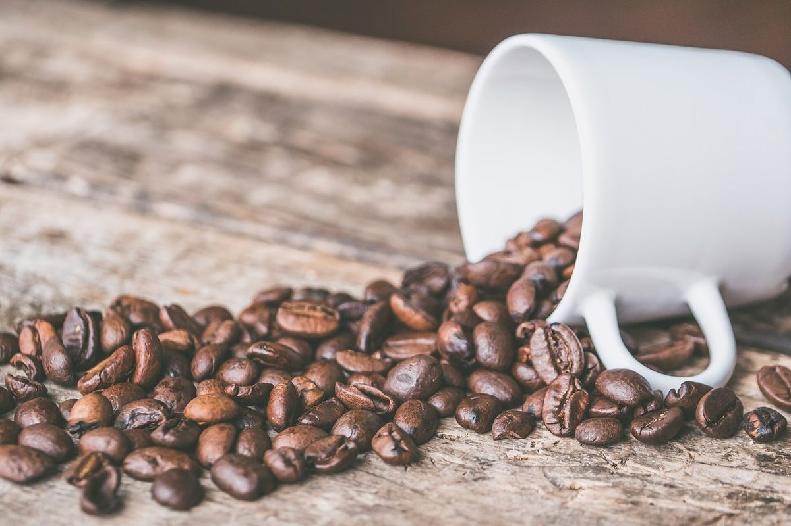
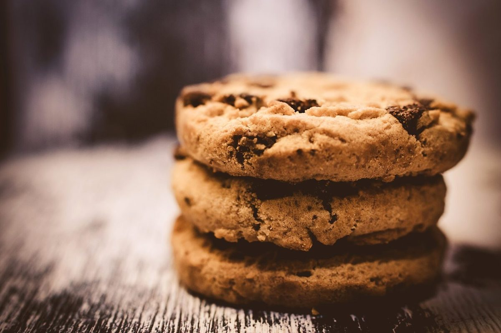
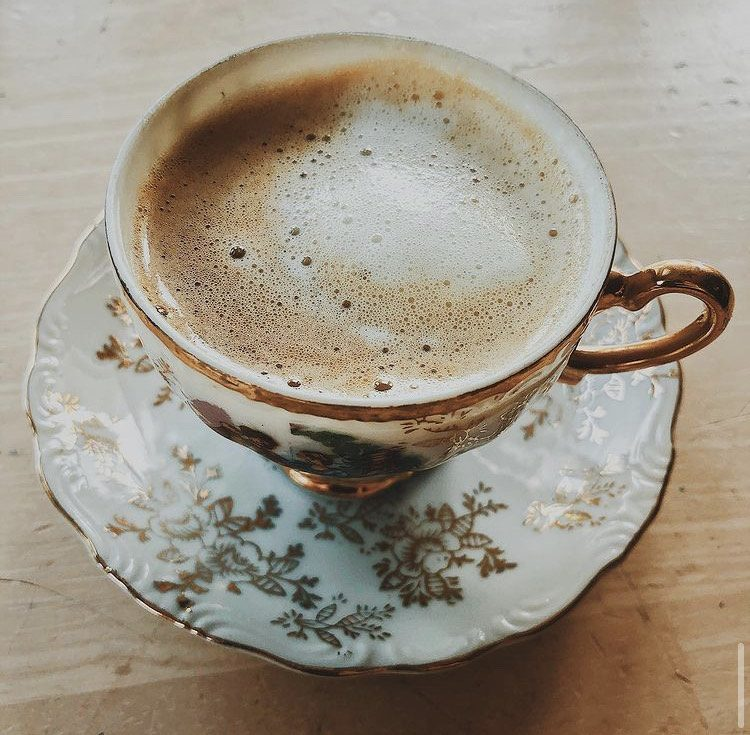
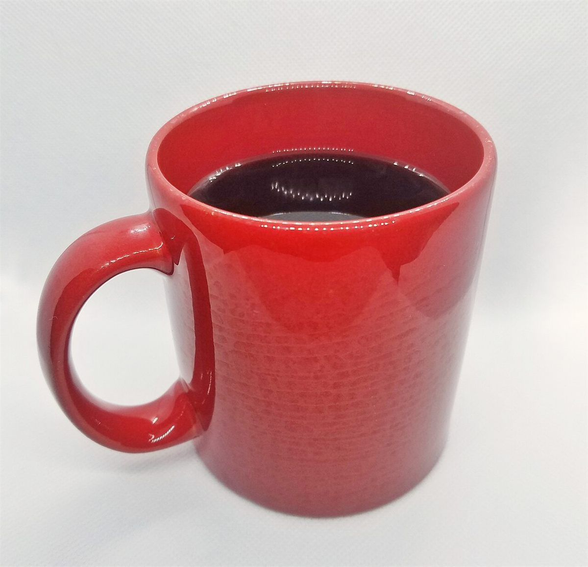

制作側の連想
サイクロトロンの部位を、配置図にしてみる
このサイトは、粒子を円を描くように走らせて加速する装置・サイクロトロンを図にしたつもりで作りました。六つの部位に番号をふり、上の図と並べています。制作側の連想で、お店の理念・由来とは無関係です。実際の装置の仕様を示すものではありません。
凡例
六つの部位
- 1イオン源加速する粒子を最初につくって、中心から送り出す部分。
- 2ディー電極アルファベットのDの形をした、向かい合う二つの電極。
- 3電磁石上下から挟んで、粒子の進む道を円の形に曲げる磁石。
- 4真空チャンバー空気を抜いた、粒子が走るための密閉した容器。
- 5高周波電源電極に細かく向きの変わる電気をかける装置。
- 6引き出し口加速した粒子を、外へ取り出すための出口。
写真(イメージ)
カップと焼き菓子の写真




写真はイメージです。お店のものではありません。
ご案内
お店のこと(確認できたものだけ)
| 所在地 | 〒913-0052 福井県坂井市三国町運動公園2丁目1-1 |
|---|---|
| 電話 | 準備中 |
| 営業時間 | 準備中 |
| 定休日 | 準備中 |
| ご予約 | 準備中 |
| 駐車場 | 準備中 |
| SNS | Instagram @porta_392 |